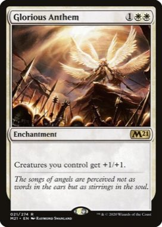
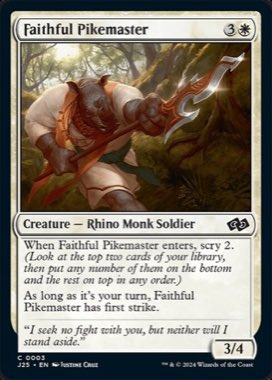

Variant B · förslaget
B · Handen
Kortet rör sig som när en hand flyttar det. Det läggs ned när det spelas ut, lyfts, bärs och sätts ned när det flyttas, och landar som högens nya toppkort i graveyard. Väntan medan kameran letar syns inte.
Reading the card…Asking Claude…

Reading the card…Asking Claude…
Reading the card…Asking Claude…

Reading the card…Asking Claude…
Reading the card…Asking Claude…

Reading the card…Asking Claude…

Reading the card…Asking Claude…

Reading the card…Asking Claude…

Reading the card…Asking Claude…


−65 %+
Händelser
Tempo
Rörelse
Namnet efter
Kameran säger
{{l.t}}{{l.txt}}
Tidslinje · {{tlTitel}}tider i ms från kamerans uppdatering · spelhuvudet följer uppspelningen
{{f.titel}}{{f.nar}}{{f.om}}
{{f.tomTxt}}
Så ser motståndaren ditt bord
Reading the card…Asking Claude…
Reading the card…Asking Claude…
Reading the card…Asking Claude…
Reading the card…Asking Claude…
Reading the card…Asking Claude…
Reading the card…Asking Claude…
Reading the card…Asking Claude…
Reading the card…Asking Claude…
Reading the card…Asking Claude…
−65 %+
Samma händelser på mattan en motståndare ser i bordsvyn: 0,41 gånger så stor och vänd mot hen, korten upprätta.
Regler
- Start: animeringen börjar i samma bildruta som kamerans uppdatering. Ingenting väntar in något annat, så löftet om 0,3 s står kvar.
- Avbrott: ett nytt spår tar över från där kortet står. Position, vridning och skala behåller farten: första segmentet blir cubic-bezier(x1, k·x1, x2, y2), k = v·T/Δ.
- Prestanda: varje bildruta bara transform och opacitet. Skuggan är ett eget lager som tonas, filter används bara under nedtoningen.
- Små bord: samma tider. Rörelsen skalas med mattan — lyftet blir ett par pixlar i en motståndares kolumn.
Easing och värden
UTcubic-bezier(.2,.8,.3,1) — landning och settle
HFcubic-bezier(.3,.75,.25,1) — flygturen ur solfjädern
FLYcubic-bezier(.4,0,.2,1) — flygTillGrav
SOFTcubic-bezier(.3,.7,.3,1) — mjuk vridning (ny)
OUT/INease-out, ease-in, ease-in-out, linear
värdennedtoning 1 = grayscale(.8) brightness(.55) + streckad kant · skugga 1 = 0 26px 40px -12px #000f · grön ring 0→1 = 0→12 px, alfa .53→0
färgerblå = kortet · grå = platshållaren · lila = spåret · gul = graveyard-högen · ◆ = mellanläge